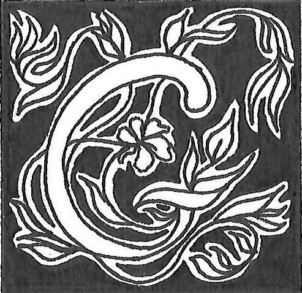

Gladys Brégeon : le texte, matière en mouvement ?
Propos recueillis par Lisa Califano
ladys Brégeon est une artiste plasticienne et autrice. Dans son travail artistique, l’écriture et l’image, deux « langues du trait », dialoguent,
se confrontent et se complètent.
Elle façonne ses livres d’artiste comme des espaces performatifs
de textes graphiques et poétiques,
où les frontières entre les mots
et les images s’estompent, laissant place à une expression artistique singulière et captivante.
La première chose que l’on peut remarquer dans votre travail artistique, c’est cette alliance entre le texte et l’image. Qu’est-ce qui vous a menée à cette pratique ?
Ce que j’ai commencé à faire, c’est écrire, bien que l’image
ait ensuite pris une place plus importante dans mon travail.
Mais l’écriture s’est infiltrée comme une sorte de système
vasculaire : elle était sous-jacente jusqu’à irriguer l’ensemble
de la création et devenir saillante. Elle s’est alors légitimement intégrée dans mon travail plastique au fil du temps. Alors que ma formation aux Beaux-Arts de Paris ne comprenait pas
d’atelier spécifique dédié à l’écriture, il m’arrivait tout de même d’écrire sur des peintures. À cette époque, le texte était retenu par l’image et ne s’assumait pas.
Le texte est donc présent dès le début de mes créations et vient lui-même parfois combler certaines failles de l’expérimentation graphique qui peut rester flottante : je pense et produis des images sans toujours savoir précisément où je vais. Je me demande ce qu’est la réalité d’une image. Pour répondre à cette question, je suis obligée de prendre du recul : je dois m’extraire du crayon, du papier, du processus dans lequel je suis.
C’est l’écrit qui me permet de prendre ce recul vis-à-vis d’une expérience graphique et plastique dans laquelle je suis depuis l’intérieur. C’est par ailleurs une question qui m’importe beaucoup dans le travail plastique : je dois me trouver, à un moment donné, à l’intérieur de la chose. Je ne peux pas représenter,
travailler sur un sujet si je ne me suis pas trouvée à l’intérieur de cette chose, d’une façon ou d’une autre. Évidemment, cette intériorité est parfois complètement fantasmée, imaginaire. Mais elle reste, dans le processus, un passage important.
À ce propos, quel est votre processus de création lorsque vous travaillez le texte et l’image ? L’un précède-t-il l’autre ou ces deux éléments se développent-ils de manière simultanée ?
Texte et image se développent complètement de manière simultanée. L’écrit reste, tout de même, une sorte d’arrière-plan, de travail essentiellement de laboratoire – bien que j’aie publié des textes chez des éditeurs – et vient au premier plan lorsque l’image l’appelle. Il arrive que le texte poétique soit présent seul, ou en parallèle de l’image mais il peut aussi devenir matière plastique à travers des manipulations qui l’altèrent plus ou moins. Le travail d’écriture est toujours là au départ puis il glisse irrémédiablement vers l’image ; l’image est d’ailleurs souvent
le sujet même du texte. Le sens et la forme s’influencent alors mutuellement mais c’est toujours la dimension plastique
du texte qui a le dernier mot. L’image domine.
Lorsque vous avez travaillé autour du texte de Rimbaud, Barbare, vous ne vous intéressiez donc qu’à la forme du texte et non pas à son sens ?
Alors, Barbare [fig. 01 : Barbare, 2023, selon le poème d’Arthur Rimbaud tiré de « Les illuminations » (1886)], c’est un peu à part : ce travail vient de l’extérieur plutôt que de l’intérieur dans la recherche plastique. Je participais à un événement qui était en corrélation avec l’œuvre d’Arthur Rimbaud et j’ai eu envie de m’approprier un fragment de cette écriture pour le passer à mon « propre filtre », à travers une production de livres d’artiste. J’ai choisi Barbare, parce que le texte, assez énigmatique, assez syncopé, me parlait par sa forme. J’ai eu envie d’accompagner ce texte en le mettant en scène lui-même, sans chercher
à le faire dialoguer avec d’autres formes à proprement parler, mais justement, chercher la forme du texte.
En cherchant la forme du texte, vous parvenez donc à le transformer en image. Pour expliquer votre œuvre centrale, L’Œ, vous affirmez que « le texte devient image, matière
en mouvement ». Pourriez-vous développer ce que vous entendez par cette idée de transformation en matière vivante ?
Cette question est vraiment centrale dans ma façon d’aborder
le texte vis-à-vis de l’image. L’Œ est un texte au départ,
que j’ai écrit tout en travaillant sur une série, Triturations [fig. 02 : trituration j.d.g. 1997, 2012, poussière de photomatons
et photomatons poncés], série de dessins résultants du ponçage de photographies argentiques : en ponçant ces photographies, je récoltais la matière et je redessinais les visages avec cette matière. J’ai commencé ce travail en 2006, l’année précédent mon diplôme aux Beaux-Arts : il a mis six ans à aboutir sous cette forme. Quand je l’ai commencé, j’écrivais des textes
en même temps, parce que j’ai toujours écrit en arrière-plan.
Alors que le travail graphique et d’image restait à l’état
expérimental et n’aboutissait pas vraiment dans une forme donnée, je me suis penchée davantage sur les textes que sur
le travail graphique lui-même. Il s’agissait alors de fragments
de textes d’atelier, qu’il fallait que je recompose, que j’articule. Ainsi, ce texte qui ne parle que d’images et de ses états,
de vision, a trouvé un aplomb, de par son sujet et de par
sa forme – qui est plutôt poétique, littéraire, au départ en tout cas – et une fois qu’il a eu cet aplomb, j’ai commencé à jouer avec, c’est-à-dire qu’il est aussi devenu un objet plastique.
Finalement, ce travail a commencé à se mettre en mouvement – c’est pour cela que je parle de « matière en mouvement » – dès lors qu’il avait son autonomie poétique. Comme il parle d’image, il s’est pris à ses propres pièges, à son propre jeu :
il est devenu dessin, installation, il est devenu différentes choses qui le déplacent dans sa réalité plastique.
Vous évoquez l’installation, le dessin, vous travaillez
ainsi sur différents supports, à travers différents médiums. Pourquoi cette diversité ? Chaque médium a-t-il un sens particulier ?
La pertinence de l’usage d’un outil ou d’un autre s’inscrit dans
la même dynamique que dessiner ou écrire, selon ce à quoi
on souhaite donner forme : c’est le nerf, la colonne vertébrale de la recherche. Parfois, il y a aussi des recherches périphériques ou satellites qui naissent et je les laisse se faire. Je pense qu’elles participent également d’un moment donné, peut-être d’un déplacement, d’une bifurcation qui fait aussi revenir
à la recherche fondamentale, centrale, d’une façon différente. Ces médiums sont alors des outils qui vont permettre d’aller
dans la direction de cette recherche, mais différemment.
Je n’aime pas privilégier un médium parce que je n’aime pas me sentir limitée : si, à un moment donné, je sens qu’il y a quelque chose qui pointe, qui est pertinent et qui m’aide
à raconter ce que j’ai envie de raconter avec un autre outil,
même si je ne le maîtrise absolument pas, je laisse faire.
La légitimité d’un médium se raccroche à la recherche plutôt qu’à une légitimité de technique, même s’il y a des techniques que je maîtrise bien mieux que d’autres.
Vous avez parlé de « raconter » quelque chose. Le texte reste-t-il purement fictionnel ou dégage-t-il un message ?
Il y a un message. C’est toujours difficile, même quand on a
plusieurs dizaines d’années de pratique derrière soi, de savoir exactement ce qu’on fait. Je crois qu’on n’a pas non plus envie de savoir parce qu’on aime ce tâtonnement, cette recherche.
Si on savait ce qu’on cherche, pourquoi le chercher ? Maintenant, je sais ce qui me questionne et ce qui m’obsède, je sais quelles sont les choses autour desquelles je gravite de façon répétée et insistante. Ce qui me questionne, c’est la réalité
des corps et des images. Alors que l’on baigne dans un océan d’images, je me suis interrogée sur la nécessité d’en produire d’autres, alors que je me sentais déjà submergée par elles : quelles images faire et pourquoi ? Qu’est-ce qu’une image ?
Est-ce de la chair ? Est-ce du papier, de la lumière ? Est-ce que l’image a une matérialité et si oui, quelle est-elle ? Dans quel sens je la regarde ? Où suis-je dans l’image : devant, derrière, dessus ? C’est la question centrale de L’Œ, Devant, derrière,
dessus, une des variations. Je pense qu’il n’y a pas vraiment de réponse et qu’on est dans ces trois lieux à la fois. C’est la raison pour laquelle j’aime explorer les états de l’image non seulement par rapport à leur vulnérabilité matérielle vis-à-vis du temps, mais aussi par rapport à leur multiplicité de points de vue
et de réalité concrète.
Ensuite, il y a la réalité des corps : quelle est-elle face à toutes ces images ? Ce questionnement a fait l’objet d’une performance que j’ai réalisée, FIB_R [ndlr : performance réalisée en 2016, en collaboration avec Vincent Goudard et dont le texte
a été mis en page sous la forme d’un poème graphique en 2019, intitulé Fibroscopie [fig. 03 : Fibroscopie, 2019]] : deux protagonistes échangent grâce au langage, le manipulent afin de cons-
truire un lien. On a ici un échange utilisant, au commencement, un langage abstrait, comme si on avait des pictogrammes.
Il faut dire qu’à l’origine, l’écriture était de l’image, du dessin, ce qui rejoint véritablement l’idée de cette performance. Peu à peu, on tombe dans une discussion complètement banale. Finalement, cela se transforme en un échange poétique dans lequel les protagonistes fusionnent complètement jusqu’à se con-
fondre : on n’arrive plus à faire la différence entre l’émetteur
et le récepteur. Le langage est l’un des outils que nous utilisons dans cette performance pour mettre l’humain au cœur de
cette traversée des espaces, des corps et de leur réalité.
Cette performance questionne également la fibre optique,
qui peut nous faire voyager en quelques secondes, traverser
des espaces immenses aussi bien qu’elle rentre à l’intérieur
de notre corps. En effet, à travers les analyses médicales que l’on peut réaliser aujourd’hui, la fibre optique nous permet de
« visiter » nos organes. C’est assez extraordinaire de se dire que
le corps s’expose et que l’on peut le visiter aussi de l’intérieur :
cela me fascine et, en même temps, m’interroge beaucoup.
Si je reviens à la question initiale, ce n’est pas tant un message et ce n’est pas tant que je raconte cela à tout prix et de façon directe et concrète : c’est le fait que ce sont des questions
qui me préoccupent et que j’ai envie de partager avec les autres.
Dans cette œuvre, L’Œ, vous mentionnez aussi que « le texte se décline en différentes variations de mise en page et de typographie, pouvant aller du texte brut à la composition purement graphique ». Comment ces choix de présentation contribuent-ils à la narration ou à l’expression artistique ?
L’écriture se met en mouvement, car elle est dans une espèce
de cycle de métamorphoses, dès lors que l’on considère que
ce qu’on travaille, d’un point de vue plastique, est de l’ordre de
l’organisme vivant : c’est mon cas, je parle d’images-organes depuis assez longtemps. Lorsqu’on est dans cette dimension organique, on constate que les choses ne s’arrêtent pas. C’est d’ailleurs le sujet de certaines de mes productions, comme Squames [ndlr : livre d’artiste réalisé en 2019], qui signifie que l’image n’est jamais fixe et n’est surtout pas pérenne : elle est trace de mémoire, trace d’un moment donné, d’une capture
du réel. Même sous sa forme de trace, elle est éminemment vulnérable et reste, pour moi, un corps qui est alors en mouvement. Le texte suit cette idée et chaque variation, arrivant à la suite de ce texte, prend un sous-titre qui est, en fait, une phrase du texte, devenant un filtre, une version de L’Œ, tels que Les images dégluties. C’est comme si, d’un seul coup, je changeais de point de vue et je regardais le même sujet avec un autre filtre, en jouant avec un autre langage.
Vous avez évoqué les images-organes. Dans votre travail, vous parlez aussi d’imageouïr. Pourriez-vous expliquer
comment ces termes décrivent votre vision artistique
et comment se sont-ils manifestés dans votre travail ?
Imageouïr est un verbe qui est tiré d’une métamorphose du
Bescherelle que j’ai appelé le Beche elle, dans lequel je change la racine du verbe initial avant de la passer à travers toutes
les conjugaisons. On a effectivement, dans le Beche elle que
j’ai réalisé, l’idée de la bêche, d’aller creuser quelque chose :
ce que je vais bêcher, c’est le processus créatif. Dans ce travail des verbes du Beche elle, on retrouve notamment imageouïr,
une des conjugaisons que j’ai transformées et imagesir, qui se trouve sur la même page. Ces verbes deviennent des poèmes, des images qui se regardent par tous les temps. Encore une fois, je considère le langage comme une image, de par le processus de réalisation qui est important : je ne réalise pas ces pages sur du traitement de texte en écrivant les mots, mais les modifie comme des images et les travaille dans leur matérialité d’image dans Photoshop. Cela recompose ainsi un texte. Imageouïr
et imagésir sont des verbes que j’aime particulièrement dans cette série du Beche elle, ces conjurations, comme je les appelle, et non conjugaisons. En effet, on y retrouve ce rapport à l’image avec laquelle nous faisons corps. Gésir, qui vient
de mourir, et jouir sont des énergies, des notions qui, dans le travail plastique et dans la vie, sont des questions importantes.
Vous avez également évoqué votre livre d’artiste, Squames, qui présente une utilisation innovante du support avec des lettres qui apparaissent et forment parfois des mots invisibles. Pourriez-vous me parler de la genèse de cette idée
et de la façon dont vous souhaitez que le spectateur réagisse ou interagisse avec cette œuvre ?
Dans Squames, on a un livret en trois parties avec un négatif photographique argentique altéré, une pellicule de protection du négatif, ainsi qu’une découpe à l’intérieur du papier.
Ensuite, on a un poème, Squames, avec une mise en page lisible. De l’autre côté de la page, on a, en quelque sorte, livre d’artiste, des restes de ce poème [fig. 04 : Squames, 2019] avec des syllabes complètes ou seulement quelques lettres, explosées dans la page et transformant le texte en image. La lecture s’apparenterait alors à de la poésie sonore ou à quelque chose de vraiment abstrait et bruitiste. Ce texte, complètement livre d’artiste, fragmenté, voire déchiqueté, entre évidemment en résonance avec les images qui le sont aussi, et avec le thème même de ce poème, Squames, qui parle justement de la peau des images. Dans ce poème, je parle aussi du texte, de ce
qui se délite aussi dans le langage, à travers la mémoire
et les rétentions de la mémoire qui « s’exsudent par couches d’humeurs et d’errances ». On est alors, à la fois dans la ma-
tière mais aussi dans la représentation de ce que peut être un souvenir partiel : ici, c’est un mot dans lequel il manque des lettres. C’est un jeu simultané du texte et de l’image autour
de la question du reste, de la trace et du fait que les supports
ne sont pas fiables, ne sont pas éternels mais sont, au contraire, des corps vulnérables autant que nous.
De la même façon que dans Squames, la lecture est souvent difficile dans L’Œ : on a des textes parfois trop petits dans L’Œ en relique optique ou renversés comme dans L’Œ, devant derrière dessus, où vous invitez le spectateur à lire par transparence ou à l’aide d’un miroir. Le spectateur
est donc véritablement actif et ne se contente pas de con-
templer l’image. En quoi cela est-il important pour vous
et comment cela s’aligne-t-il avec votre vision artistique ?
C’est vrai que le spectateur n’est pas forcément dans un confort de lecture [fig. 05 : L’Œ, devant derrière dessus, 2017]. Néanmoins, L’Œ est un texte édité dans une mise en page classique de poésie, pas uniquement sous forme de variations plastiques. Le spectateur y a donc accès de façon confortable avec un
format qui rend la lecture possible et facile ; si tant est que
la lecture d’un texte poétique soit facile, ce qui tient aux sensibilités de chacun et aux habitudes de lecture. Dans les variations plastiques, plus ardues pour la lecture, j’essaie d’inviter
le public à modifier sa façon d’appréhender le texte et surtout
à suivre le récit depuis l’intérieur. Cette façon de voir l’histoire, le texte et l’image, c’est celle qui est questionnée par le personnage dans le récit, qui vit dans une sorte d’appareil optique, à l’échelle du globe oculaire. On est alors immédiatement plongé dans un espace réduit, où les choses sont concentrées, se cristallisent, nous invitant à ce changement d’échelle vers le petit. L’inversion rétinienne est là aussi et entre en résonance avec
ce qui se passe dans le texte : qu’est-ce que cela entraîne si moi aussi, je vois en inversé ? On est dans un cheminement qui fait écho, qui fait presque corps avec ce qui se passe dans le récit,
et c’est ce qui me semblait essentiel. Je prends, à la fois, le recul avec le travail de l’écrit sur l’expérimentation plastique, au moment de la création de ce texte, et à la fois j’y reviens, parce que je ne cesse de revenir pour questionner, essayer de comprendre. Un artiste, souvent, a ses obsessions et tourne toujours autour, cherche. Dans mon travail, je prends du recul sur une chose pour mieux y retourner.
Il est donc finalement important, pour vous, que le spectateur comprenne le texte, en tant que contenu ? Avez-vous peur qu’il ne lise que le texte écrit sous sa forme poétique
et qu’il ne cherche pas à déchiffrer le texte sous sa forme plastique ?
Pour cela, le spectateur est libre. C’est précieux qu'il puisse avoir cette liberté, que le regardeur puisse circuler dans ce texte, dans un sens ou dans un autre, ou en ne prenant qu’un fragment. Évidemment, ce qui m’intéresse est de l’amener à voir tous
les états car, pour moi, ils sont complémentaires et ne peuvent pas se remplacer. J’aime l’idée de la forme de palimpseste,
de quelque chose qui est là, derrière, caché, énigmatique et mystérieux, que l’on va chercher à déchiffrer. J’aime ce mouvement, cette réalité, cette posture que l’on peut avoir en tant
que regardeur : il faut qu’il y ait un appel, si tout est donné
de but en blanc, je ne crois pas qu’on soit tellement intrigué
et intéressé. Je pense qu’il faut que quelque chose nous amène à ouvrir une porte qui, elle-même, nous conduise vers un couloir sans réellement savoir ce qu’il y a au bout. Tout ne doit pas être donné. Finalement, la poésie, même lorsqu’elle est visible, reste parfois énigmatique et mystérieuse. C’est la raison pour laquelle la forme poétique m’intéresse en tant que plasticienne et c’est pourquoi elle est aussi lisible.
Il m’importait également que le texte existe pour lui-même parce qu’il avait son autonomie, parce que c’est la première fois d’ailleurs que dans mon travail plastique, le texte prenait une place autonome. Il était temps, je pense, qu’il puisse le faire : l’image a toujours pris une place plus importante au niveau
de la pratique d’atelier, alors que le texte a vraiment toujours été présent. C’était la première fois qu’il prenait sa légitimité. L’écriture a un rôle considérable dans mes recherches, c’est un langage en soi, autant qu’un instrument d’observation et d’analyse pour parler des images qui étaient complètement, à une époque, en situation de coma – c’est la première fois que je le formule comme tel mais on peut dire qu’il y a eu un coma, au moment de l’écriture de L’Œ – et le texte en est le témoin. L’écriture est donc devenue un outil parlant d’un autre outil, l’image, et tous deux parlent, ensemble, du sujet qui les intéresse.